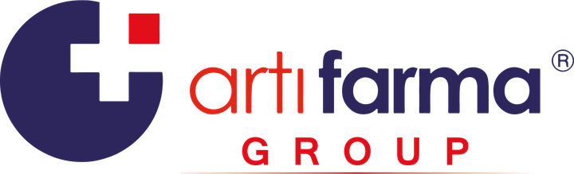

Eczaneniz için kapsamlı öz değerlendirme ve durum analizi panosu
Bu araç, eczanenizin tüm yönetim süreçlerini sistematik olarak değerlendirmenizi sağlar. soruyu mevcut durumunuza en uygun seçenekle yanıtlayın; sonuçta genel yönetim olgunluk seviyenizi, alan alan güçlü ve zayıf yönlerinizi, öncelikli eksiklerinizi, size özel iyileştirme önerilerini göreceksiniz ve ihtiyaçlarınıza göre kendi danışmanlık paketinizi oluşturabileceksiniz. Anket yanıtlarınız yalnızca bu oturumda tutulur ve hiçbir yere gönderilmez; yalnızca aşağıdaki iletişim bilgileriniz Artıfarma Group'a iletilir.
Süre: yaklaşık 15–20 dakika · Her modülü yanıtladıkça ilerleme çubuğu dolar · Sonuç ekranından yazdırabilirsiniz.
Eczanenizin 8 yönetim alanındaki mevcut seviyesi (%)
Her alanın puanı ve seviye etiketi — çubukların üzerine gelin
Düşük puan verdiğiniz konular — önce bunları ele almanız önerilir
Her alandaki seviyenize göre hazırlanan aksiyon önerileri
Analiz sonuçlarınıza göre size en uygun danışmanlık modülleri işaretlendi. Eklemek veya çıkarmak istediklerinizi seçerek kendi paketinizi oluşturun.
Bu analiz bir öz değerlendirme aracıdır; mevzuata ilişkin konularda güncel resmî kaynaklar ve bölge eczacı odanız esas alınmalıdır. Sayfa yenilenirse yanıtlar sıfırlanır — sonucu saklamak için yazdırın.